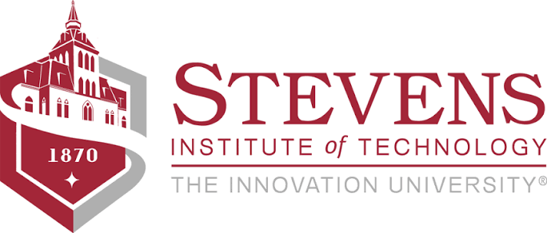
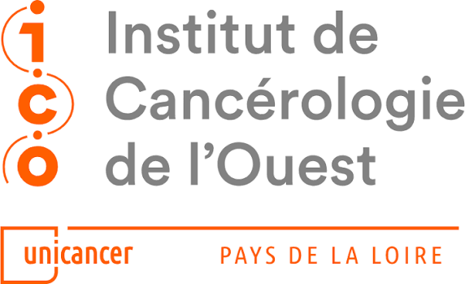
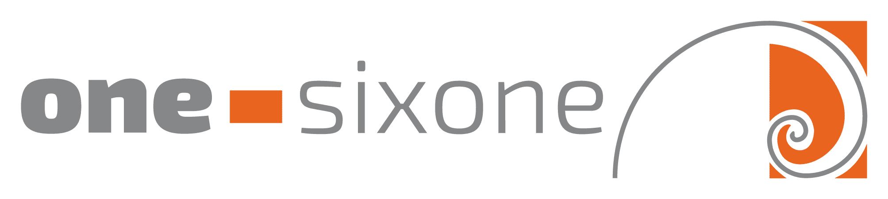
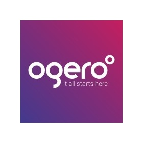
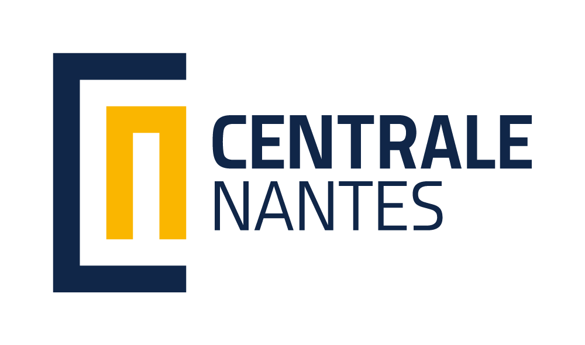
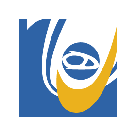
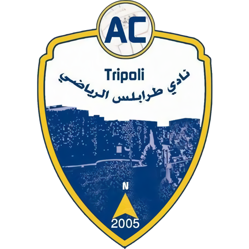
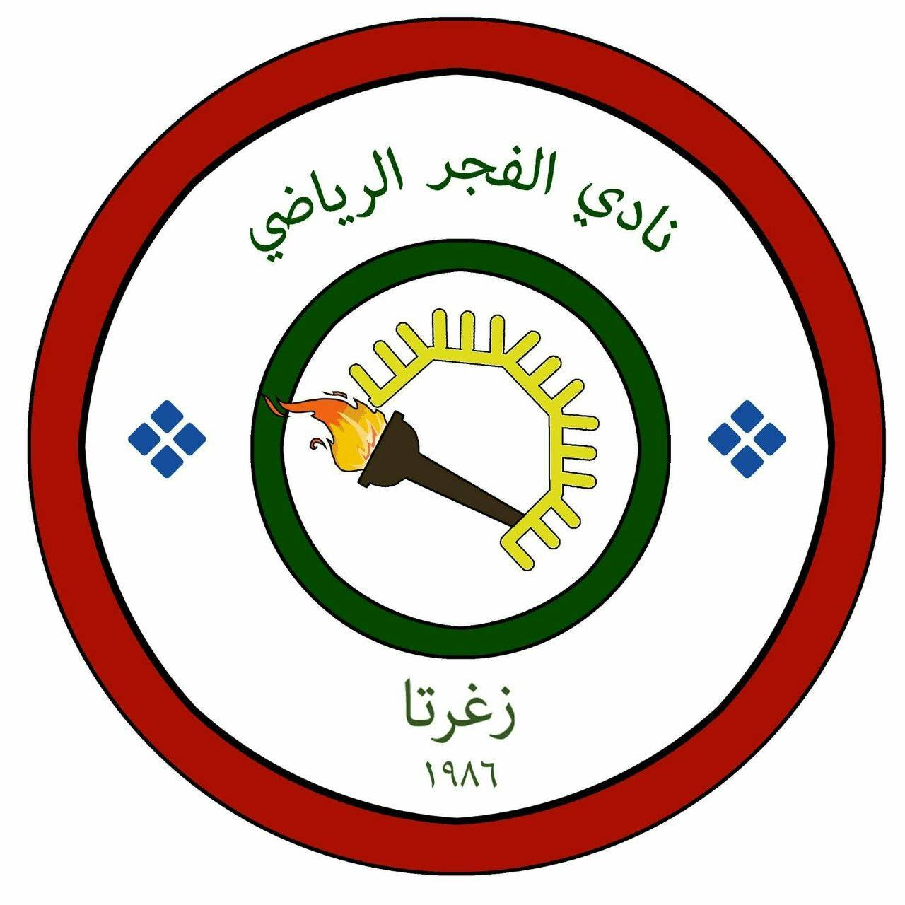

Aug 2026 — Present
Research Assistant
Stevens Institute of Technology · School of Computing
The academic, professional, multilingual, athletic, and community chapters behind the research.
A transatlantic training path across engineering, computer science, artificial intelligence, telecommunications, and embedded systems.

Stevens Institute of Technology · School of Computing
Stevens Institute of Technology

Institut de Cancérologie de l’Ouest · Saint-Herblain, France

one-sixone · Sainte-Luce-sur-Loire, France

Ogero Lebanon
Stevens Institute of Technology · School of Computing
U.S. doctoral component · AI for edge and hardware-resource-constrained systems
École Centrale de Nantes · LS2N
French doctoral component · École Doctorale · AI for edge and hardware-resource-constrained systemsÉcole Centrale de Nantes
Major: L’Informatique pour l’Intelligence Artificielle · Minor: International Business Affairs Engineering
Lebanese University · Faculty of Engineering
Computer & Telecommunications Section · Master-equivalent engineering degreeNatural Language Processing · Deep Learning · AI for Good · Mathematics for Machine Learning & Data Science
Machine Learning Specialization
CCNA 1
Python for Everybody Specialization


Lebanon U-15 (2015) · Lebanon U-19 (2019) · North Lebanon Cup with Al Fajer · Universities Cup with Centrale Nantes.
An elected community leadership chapter grounded in responsibility, organization, and service.